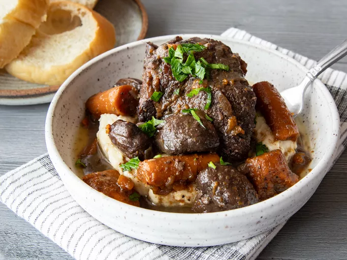

King Ranch Chicken Casserole

Description
King Ranch chicken is a Tex-Mex casserole with unknown origins, though it's assumed the dish is named after King Ranch, Texas. The casserole consists of pulled chicken, canned soup, green chiles, corn tortillas, sour cream, veggies, and lots of cheese.
Ingredients
- Vegetables
- Canned Soup
- Tomatoes and Chile Peppers
- Chicken Broth
- Sour Cream
- Spices and Seasonings
- Chicken
- Cheese
- Tortillas
- Oil
Steps
- Make cream sauce
- Assemble the casserole
- Bake the casserole
- Pour in the beef broth and bring to a simmer.
- Cover and place in the preheated oven until the meat is very tender.